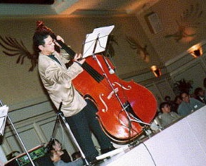
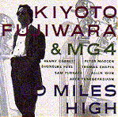
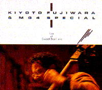
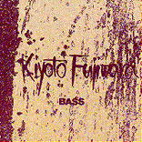
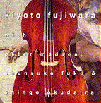

藤原 清登（ふじわら きよと）
高松高校 昭和47年卒
(Last updated:1998.1)
プロフィール

音楽一家に育ち、10歳でベースを始め、高高時代に60年代ジャズに開眼。高高3年のクラスは７組（芸術クラス）。しょっちゅう授業をさぼり、ベースを弾いていたとか。
昭和47年高校を卒業して、東京芸術大学器楽科に入学。
大学卒業後すぐに渡米してボストンのバークリー音楽大学に留学。
ジョージ・ラッセルやラン・ブレイク等と共演後、ホレス・シルバー・クインテットに参加して、プロへの道を確かなものとした。
1980年ジュリアード音楽院に入学。
ジュリアード・オーケストラの要員としてヨーロッパツアーにも参加。同大学院を経て1984年卒業。
同年、ＭＧ４を結成。メンバーは、ケニー・ギヤレット（sax）、ピーター・マディソン（p）、福家俊介（ds）の４人。なお、福家俊介は高高48年卒。
度々来日ツアーを行い、また、ＮＨＫ番組のテーマ、キーコーヒーなどのＣＭを作曲。
アルバム
ＭＧ４
ＭＧ４として第１作目のアルバム。
「絶えず一緒に切磋琢磨しあってたきた仲間らしく、いつも和気あいあいとオープンに演奏を進め合い、ときには真剣に音楽を語り合う態度は、はた目にも実にほほえましかった。
藤原は、アルコに、ピチカートに本領を発揮したし、ケニーもＯＴＢのときとはまた違った局面を出した。そして、ニューヨークで辛酸をなめ、苛烈な競争を耐え抜いてきた俊英たちの新しいコンセプトによる熱く煮えたぎったジャズがここに実をつけたのだ。」（'88.1 Jazz Lifeより）
マンハッタン・タンゴ
精緻に組み立てられた端正な演奏だ。激しい破調の部分が加われば、柔らかみのある激情がさらに引き立つだろう（'90.1.30朝日新聞夕刊・視聴室より）。
６０ＭＩＬＥＳ ＨＩＧＨ

ゲストとして、トーマス・チェイビン（サックス、フルート）、アレン・ウォン（サックス）、アート・タンクボヤチヤン（パーカッション）、サム・ファルナス（サックス、クラリネット）が参加。アルバム曲のうち、「レイン」は、その後のライブでもたびたび取り上げられる、藤原お気に入りの曲。
「このアルバムでもっとも意識したのは、いかに1960年代のジャズの持っていた表現のための自由な心を、90年代に受け継ぎ、表わすかということである。」（藤原）。
（発売元 ＴＤＫコア）
ＫＩＹＯＴＯ ＦＵＪＩＷＡＲＡ ＆ ＭＧ４
ＳＰＥＣＩＡＬ －live at Sweet Basil－

1994年（Ｈ6）2月、ニューヨークのジャズクラブ「スウィート・ベイジル」に出演、ライブレコーディングしたもの。ＭＧ４の４枚目のアルバムである。
出演は、ＭＧ４のメンバーの他、ゲストとして、アレン・ウォン（サックス・フルート）、橋本一子（ボーカル・キーボード）、ゲイブリエル・ジャレット（パーカッション）。橋本一子は、ＹＭＯ、渡辺香津美ＭＯＢＯなどに参加するなど幅広い音楽活動を展開、また、ゲイブリエル・ジャレットは、キース・ジャレットの息子である。
藤原の生真面目な性格を反映した端正なスタジオ録音に比べ、セプテットのほとばしる激情があふれ出るホットなライブである。（ユニコム「ＨＯＴ ＬＥＴＴＥＲＳ」より）
（発売元 ＴＤＫコア）
Ｂ Ａ Ｓ Ｓ

ソロアルバム。ジャズが趣味でない人にとって、ベースのソロを全曲聞くのは、つらいようにも思えるが、このアルバムは、聞けば聞くほど味がでて、たいくつしない。
「アルコ奏法にかけては現在彼の右に出るものがいないと敢えて言いたいほど、正確なピッチといい、弦の精妙かつダイナミックな美しいソノリティーを引き出すボーリング技術の卓抜さといい、目を見張らされるすばらしさだ。・・・この正確なピッチや起伏に富むダイナミズムを生むタッチ（弦と手の関係）は、むろんのこと、ジャズ的なピッチカート奏法でも発揮されている。」（アルバム「ＢＡＳＳ」より）
（発売元 壽限夢）
モダン・ベース

「枯葉」「サマータイム」「鳥の歌」などポピュラーな曲が選ばれており、聞き易いアルバムになっている。２曲目は「ブリーカー・ストリートのテーマ」。ブルースであり、藤原のアルバムとしては珍しい。
最後の曲は、「パープル・クラウド・マウンテン」。直訳すれば、「紫雲山」。
藤原の母校、香川大学付属小学校の校歌である。
（発売元 キングレコード）
トピック
朝日新聞1996年10月31日夕刊に「モダン・ベース」発売に際し、藤原さんの記事が大きく掲載されました。その一部を引用します。
「今回のアルバムも専門誌で高い評価を集めるなど、実力には定評があるところ。持ち味はジャンルにとらわれない自由さだ。
（中略）
にやりとさせられるのが、最後を飾る「パープル・クラウド・マウンテン」。実はこの曲、母校の小学校の校歌だという。言われなくては気がつかないほどロマンチックなアレンジに仕上がっており、『けっこういいでしょ、これ』と目を細める。やっていることは高度でも、どこか敷居が低い。これも人柄か。」